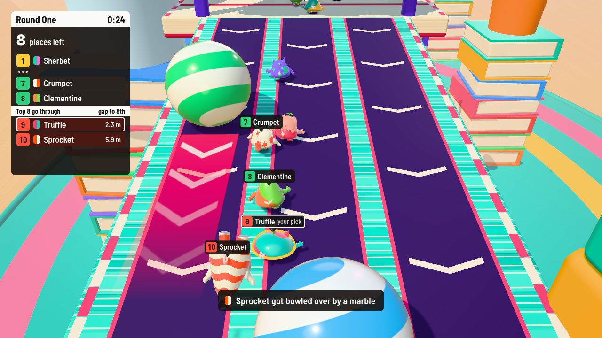
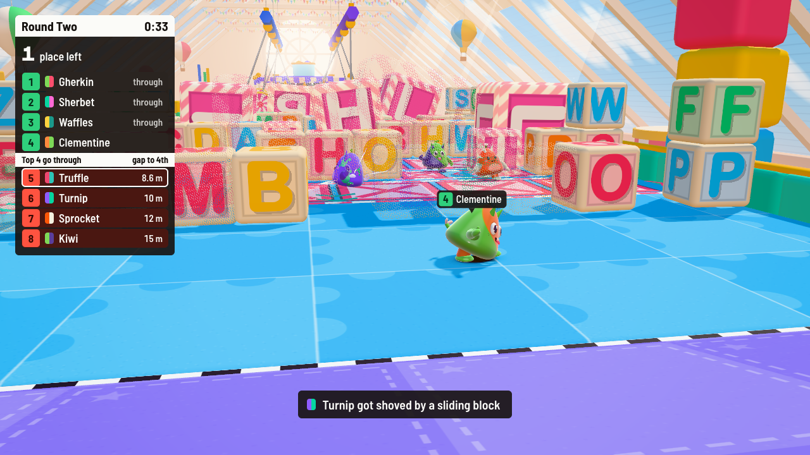
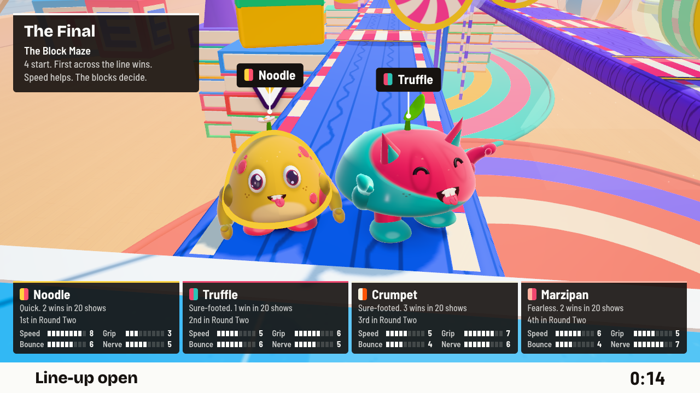
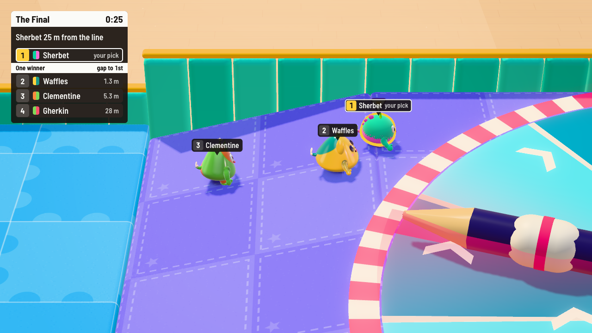
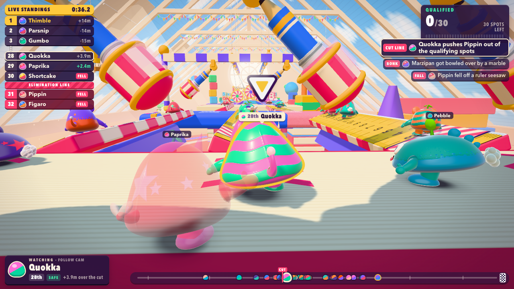

Tumbletop: three-round show
The show is called Goober Guys for viewers. Race display and every card are in the site's ink look (the owner picked the table of three layouts). Music is in: four Kevin MacLeod tracks he chose by ear, one per part of the show (the site must print the credit in ASSETS.md). Effects are in too, each picked by him by ear (countdown, bets-closed bell, through, last place, fall, applause, one hit). Comprehension and mid-join not re-run on the new display.
Order of work
| Step | State | Note |
|---|---|---|
| Roster of 24 with permanent names, looks, stats and records | Done | sim/roster.js, show/records.js, a 36-show pre-season in data/records.json |
| Three seeded rounds from the seven course sections | Done | Lengthened as the owner asked: races about 41, 35 and 23 s; each round overlaps the next by one section |
| Determinism, completion, balance, drama checks | Done | All pass over 2000 shows on the longer rounds; node and browser agree on 9 of 9 rounds |
| Show script, channel.ts, index.ts, simulate, SIM_HASH | Done | Smoke test on the real runner (memory chain) passes |
| Stage driven by the feed, joins mid-show | Done | Rejoin checked at seven points of a show |
| Broadcast: cameras that follow the cut line, highlight | Done | One tracking shot on the fight for the last place, see-through maze blocks, one cut to the line camera. Blind picks 3 of 3; lone critics still 3 to 4 |
| Stage display cut down to the cut line | Done | Tower, one event line, name tags, show cards; five critic rounds |
| Comprehension test on each round, blind look test | Done | Re-run on this build: 5 of 5, 5 of 5, 5 of 5 |
| README, REPORT | Done | Both rewritten for the second pass |
| Race camera judged on video (4 frames a second) | Done | Seven versions, three fresh critics each; see ROUNDS.md round 7 |
| Dead air, idle state, mid-show join | Done | Worst still stretch 0.2 s; join matched on every fact in 6 of 6 pairs; idle card now says the format |
| Sound measured and remixed | Done | Four mixes; critic by measurement 4, 6, 6, 7 of 10 |
| Blind test against reference frames | Not started | Needs the owner to allow saving reference footage frames to disk |
| Remove vercel.json, .vercelignore, SPEC.md | Not started | The delete was refused by the permission check; the owner can remove them |
| Cut the stage text (owner: "straight slop") | Done | Audited by a fresh critic; comprehension 15 of 15 on the stripped build |
| unlockAudio() on the handle, no sound button | Done | CONTRACT.md sound hooks |
| Recorded sounds and a proper music track | Done | 14 CC0 files in web/src/audio/ (ASSETS.md); chosen without hearing them; critic by measurement 5, then 6 of 10; a one-minute clip with sound sent to the owner |
Checks
| Check | State | Measured | Bar |
|---|---|---|---|
| Determinism | Pass | same seed, same state hash; node and browser agree on 9 of 9 rounds | identical round |
| Completion | Pass | 2000 shows, 0 rounds ended on the clock | 200 shows, none stuck |
| Balance | Pass | 4.3% to 9.0% win rate per Gumble | 2% to 15% |
| Stats matter | Pass | fastest third against slowest third: 1.33 times | above 1, under 2 times |
| Drama | Pass | 4.61 and 4.08 changes of the last place in the final 10 s | 2 in rounds one and two |
| Comprehension, each round | Pass | Round One 5 of 5, Round Two 5 of 5, the Final 5 of 5 (15 fresh critics, this build) | 4 of 5 critics, all three rounds |
| Look against today's build | Pass | picked 21 of 24 times (88%) by three blind judges | 50% blind-pick wins on readability |
| A bet every 90 s | Pass | windows about a minute apart, 65 s across the result | 90 s |
| Frame rate | Pass | median 16.7 ms, 0.05% of frames over 25 ms | 60 fps |
| No dead air | Pass | longest stretch with nothing moving: 0.2 s (tools/deadair.mjs) | 2.5 s |
| Blind picks against reference frames | Not started | not run: needs the owner to allow saving reference frames | shared bar 4 |
| Camera, blind picks | Pass | Director picked 3 of 3 against Leader and Overview; the final's cut picked 3 of 3 against two alternatives | picked more than half the time |
| Sound levels | Pass | recorded mix: -17.5 LUFS at the dev default volume, range 6.8 LU, true peak -1.8 dBFS; critic by measurement 6 of 10 | about -16 LUFS, peak under -1 dBFS |
Rounds
Round 0: roster, three rounds, checks
Sim reworked into three seeded rounds over a fixed roster. Show script, fake show, channel and tests written.
Round 1: the stage, first critics
Feed-driven stage, new race display and show cards, cut-line director, synthesised sound.
Critics: Readability 5, 5, 6; looks 6, 7, 6; camera 4, 3, 4. The camera is not on what the graphics talk about; no single lock moment.
Round 2: follow the line to the line
Title call opens the line-up, a lock beat, finish-line camera, tags only on visible Gumbles.
Critics: Readability 5, 5, 6; looks 6; camera 4, 4, 3. Ticker contradicts the tower, the final is a runaway, the lock is too quiet.
Round 3: the lock, the lens, a closer final
Full-width lock card, per-round camera set-ups, final tightened in the sim, incidents-only event line.
Critics: Readability 6, 6, 5; looks 6, 6, 5; camera 4.5, 4, 3. Tags float over the wrong creature; the open window has no state.
Round 4: stay with the same Gumbles
Sticky home shot, side-on final, clock to the lock, one winner card, tags that point at heads.
Critics: Readability 7, 6, 6; looks 7, 6, 6; camera 6, 4, 3. Hidden places in the tower; the pick loses its place off camera.
Round 5: the open bar, the chase
White open bar that swells into the lock band, finish camera only for the last-place fight, leader and chase alternate in a runaway final.
Critics: Readability 7, 7, 7; looks 6; camera 4, 3, 4; phases 7, betting rhythm 7.



Round 6: formal tests
Comprehension 4 of 5, 5 of 5, 5 of 5. Blind look test 21 of 24. A whole show at real window lengths: 4:18, no errors, 60 fps.


Round 7: longer rounds, the camera on video, dead air, sound
Rounds One and Two lengthened. Race camera rebuilt as one tracking shot with see-through maze blocks and one cut to a line camera; judged on 4 fps strips over seven versions. Dead air, idle, mid-show join and sound measured and fixed.
Critics: Camera alone 3 to 4 throughout; in blind picks the Director won 3 of 3 and the final's cut 3 of 3. Sound by measurement 4, 6, 6, 7. Comprehension 15 of 15.
Round 8: the owner watched it
Stage text cut hard, twice. unlockAudio() added. Sound now recorded: one looping CC0 track and thirteen CC0 one-shots, with synthesised stand-ins as fallback.
Critics: Text audit "nearly", then its list was cut. Comprehension 15 of 15. Recorded sound by measurement 5, then 6 of 10. Nobody has listened to it yet.